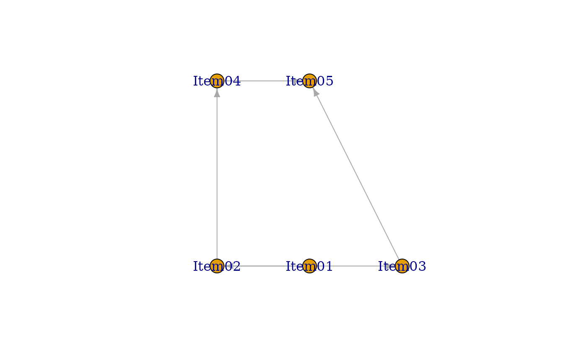

performs Bayesian Network Model with specified graph structure
Usage
BNM(
U,
Z = NULL,
w = NULL,
na = NULL,
g = NULL,
adj_file = NULL,
adj_matrix = NULL,
beta1 = 1,
beta2 = 1
)Arguments
- U
U is either a data class of exametrika, or raw data. When raw data is given, it is converted to the exametrika class with the dataFormat function.
- Z
Z is a missing indicator matrix of the type matrix or data.frame
- w
w is item weight vector
- na
na argument specifies the numbers or characters to be treated as missing values.
- g
Specify a graph object suitable for the igraph class.
- adj_file
specify CSV file where the graph structure is specified.
- adj_matrix
specify adjacency matrix.
- beta1
Beta distribution parameter 1 (for correct responses). Default is 1.
- beta2
Beta distribution parameter 2 (for incorrect responses). Default is 1. Note: referred to as beta0 internally.
Value
- nobs
Sample size. The number of rows in the dataset.
- testlength
Length of the test. The number of items included in the test.
- crr
correct response ratio
- TestFitIndices
Overall fit index for the test.See also TestFit
- adj
Adjacency matrix
\
- param
Learned Parameters
- CCRR_table
Correct Response Rate tables
Details
This function performs a Bayesian network analysis on the relationships between items. This corresponds to Chapter 8 of the text. It uses the igraph package for graph visualization and checking the adjacency matrix. You need to provide either a graph object or a CSV file where the graph structure is specified.
Examples
# \donttest{
# Create a Directed Acyclic Graph (DAG) structure for item relationships
# Each row represents a directed edge from one item to another
DAG <-
matrix(
c(
"Item01", "Item02", # Item01 influences Item02
"Item02", "Item03", # Item02 influences Item03
"Item02", "Item04", # Item02 influences Item04
"Item03", "Item05", # Item03 influences Item05
"Item04", "Item05" # Item04 influences Item05
),
ncol = 2, byrow = TRUE
)
# Convert the DAG matrix to an igraph object for network analysis
g <- igraph::graph_from_data_frame(DAG)
g
#> IGRAPH 965aea5 DN-- 5 5 --
#> + attr: name (v/c)
#> + edges from 965aea5 (vertex names):
#> [1] Item01->Item02 Item02->Item03 Item02->Item04 Item03->Item05 Item04->Item05
# Create adjacency matrix from the graph
# Shows direct connections between items (1 for connection, 0 for no connection)
adj_mat <- as.matrix(igraph::as_adjacency_matrix(g))
print(adj_mat)
#> Item01 Item02 Item03 Item04 Item05
#> Item01 0 1 0 0 0
#> Item02 0 0 1 1 0
#> Item03 0 0 0 0 1
#> Item04 0 0 0 0 1
#> Item05 0 0 0 0 0
# Fit Bayesian Network Model using the specified adjacency matrix
# Analyzes probabilistic relationships between items based on the graph structure
result.BNM <- BNM(J5S10, adj_matrix = adj_mat)
#> No ID column detected. All columns treated as response data. Sequential IDs (Student1, Student2, ...) were generated. Use id= parameter to specify the ID column explicitly.
result.BNM
#> Adjacency Matrix
#> Item01 Item02 Item03 Item04 Item05
#> Item01 0 1 0 0 0
#> Item02 0 0 1 1 0
#> Item03 0 0 0 0 1
#> Item04 0 0 0 0 1
#> Item05 0 0 0 0 0
#> [1] "Your graph is an acyclic graph."
#> [1] "Your graph is connected DAG."

#>
#> Parameter Learning
#> PIRP 1 PIRP 2 PIRP 3 PIRP 4
#> Item01 0.600
#> Item02 0.250 0.5
#> Item03 0.833 1.0
#> Item04 0.167 0.5
#> Item05 0.000 NaN 0.333 0.667
#>
#> Conditional Correct Response Rate
#> Child Item N of Parents Parent Items PIRP Conditional CRR
#> 1 Item01 0 No Parents No Pattern 0.6000000
#> 2 Item02 1 Item01 0 0.2500000
#> 3 Item02 1 Item01 1 0.5000000
#> 4 Item03 1 Item02 0 0.8333333
#> 5 Item03 1 Item02 1 1.0000000
#> 6 Item04 1 Item02 0 0.1666667
#> 7 Item04 1 Item02 1 0.5000000
#> 8 Item05 2 Item03, Item04 00 0.0000000
#> 9 Item05 2 Item03, Item04 01 NaN(0/0)
#> 10 Item05 2 Item03, Item04 10 0.3333333
#> 11 Item05 2 Item03, Item04 11 0.6666667
#>
#> Model Fit Indices
#> value
#> model_log_like -27.046
#> bench_log_like -8.935
#> null_log_like -28.882
#> model_Chi_sq 36.222
#> null_Chi_sq 39.894
#> model_df 20.000
#> null_df 25.000
#> NFI 0.092
#> RFI 0.000
#> IFI 0.185
#> TLI 0.000
#> CFI 0.000
#> RMSEA 0.300
#> AIC -3.778
#> CAIC -29.829
#> BIC -9.829
# }